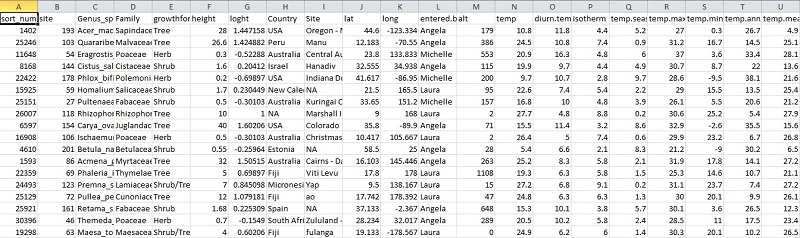

Having skills in organising and summarising data is crucial for students and researchers in all sciences. On these pages, we give some guidance for manipulating data in ways that can save a lot of time when it comes to analysing data and making effective figures.

Data manipulation using the packages dplyr, tidyr and reshape2.
###Further help
The British Ecological Society’s Guide to Data Management in Ecology and Evolution
Author: Alistair Poore
Last updated:
## [1] "Wed Jan 19 11:11:09 2022"